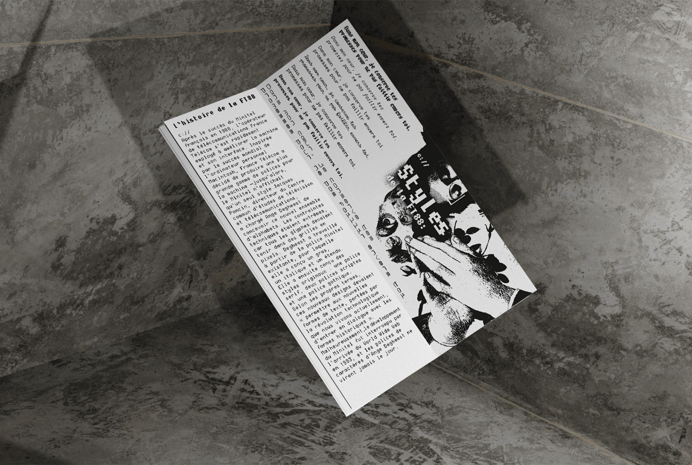
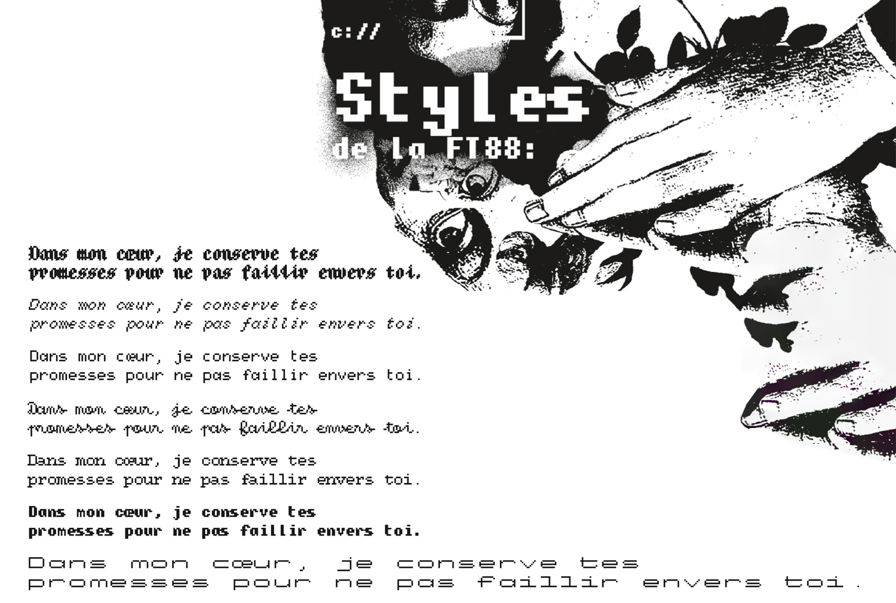

FT88 Ange Degheest.
Projet de creation d'un specimen typographique pour la police FT88 crée par le typograph Ange Degheest.
L'objectif est de mettre en avant les différentes caractéristiques de la police a travers un specimen.
Ce projet m'a permis d'experimenté avec la mise en page typographique ainsi que la hiérarchie de l'information. Mais aussi de d'apprendre after effects pour la création de la vidéo d'animation du specimen.
Le speciment est trois éléments graphiques :
-
- Le specimen typographique en lui meme au format 10,5 cm par 29,7 cm
- Affiche horizontal 80 cm par 60 cm
- Une vidée qui anime l'affiche



